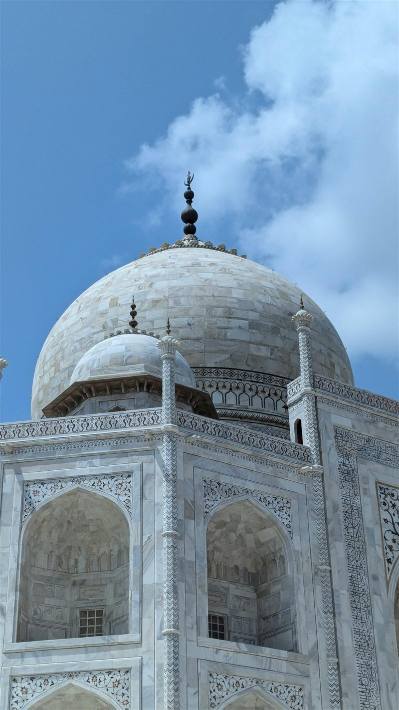
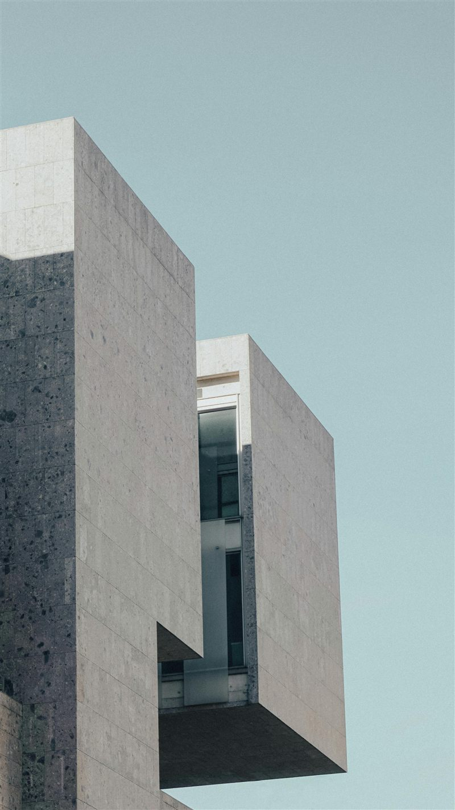
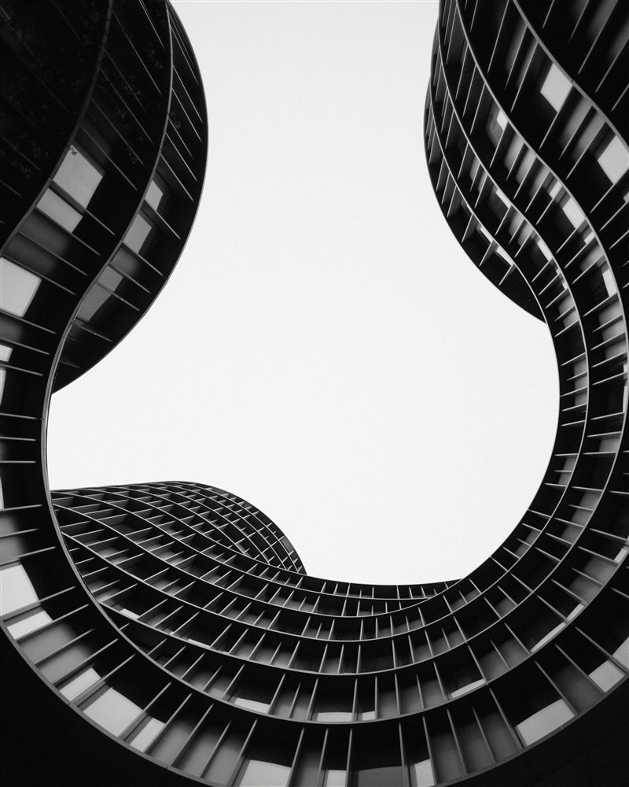
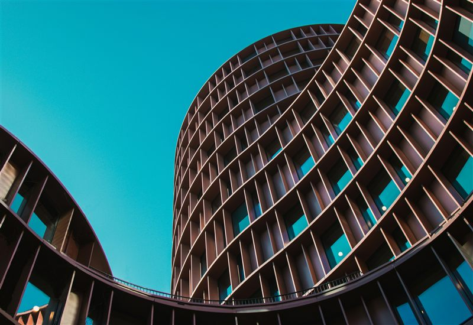
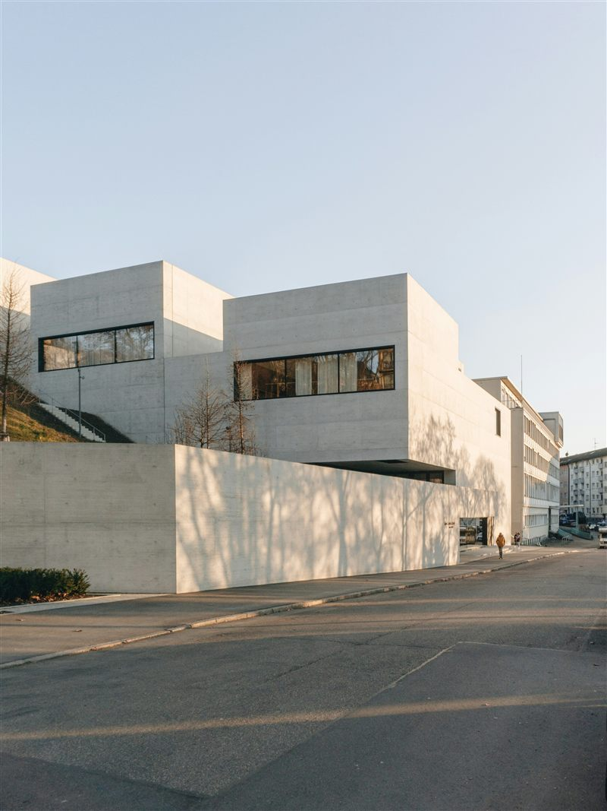

Imáxes reducidas
Non se empregan as imaxes orixinais porque superan o tamaño necesario para a web e aumentan o tempo de carga, o consumo de datos e a memoria do navegador.
Descubre deseños innovadores que fusionan estética e funcionalidade. Cada proxecto conta unha historia de creatividade e precisión.
Explorar Galería




Non se empregan as imaxes orixinais porque superan o tamaño necesario para a web e aumentan o tempo de carga, o consumo de datos e a memoria do navegador.
As fotografías se sirven en versiones JPG optimizadas para el responsive y también se mantienen versiones WebP en la carpeta de recursos. El logotipo se conserva en PNG por su transparencia.
La galería usa srcset con 300w, 800w y 1200w para que el navegador elija la imagen
correcta según el ancho de pantalla y la densidad de píxeles.